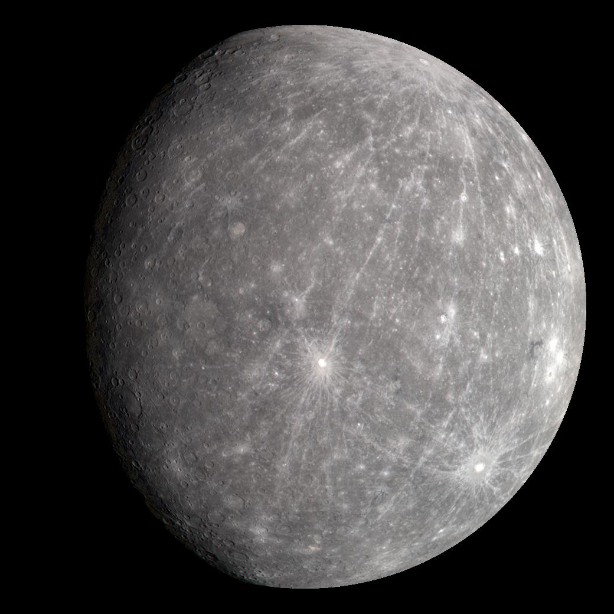
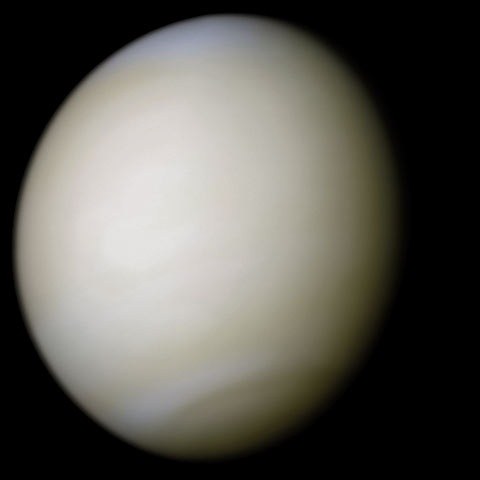
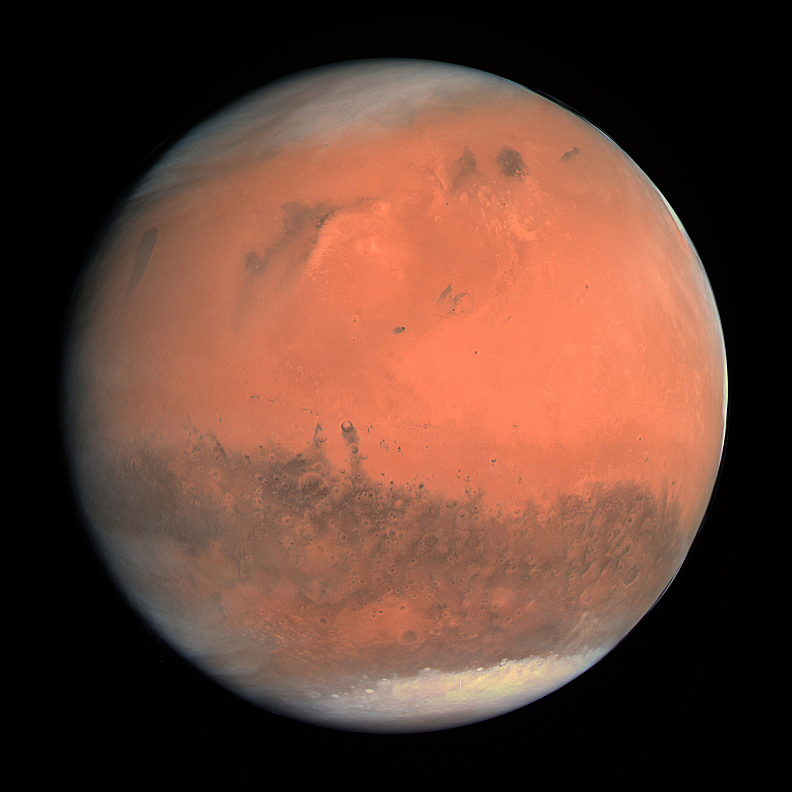
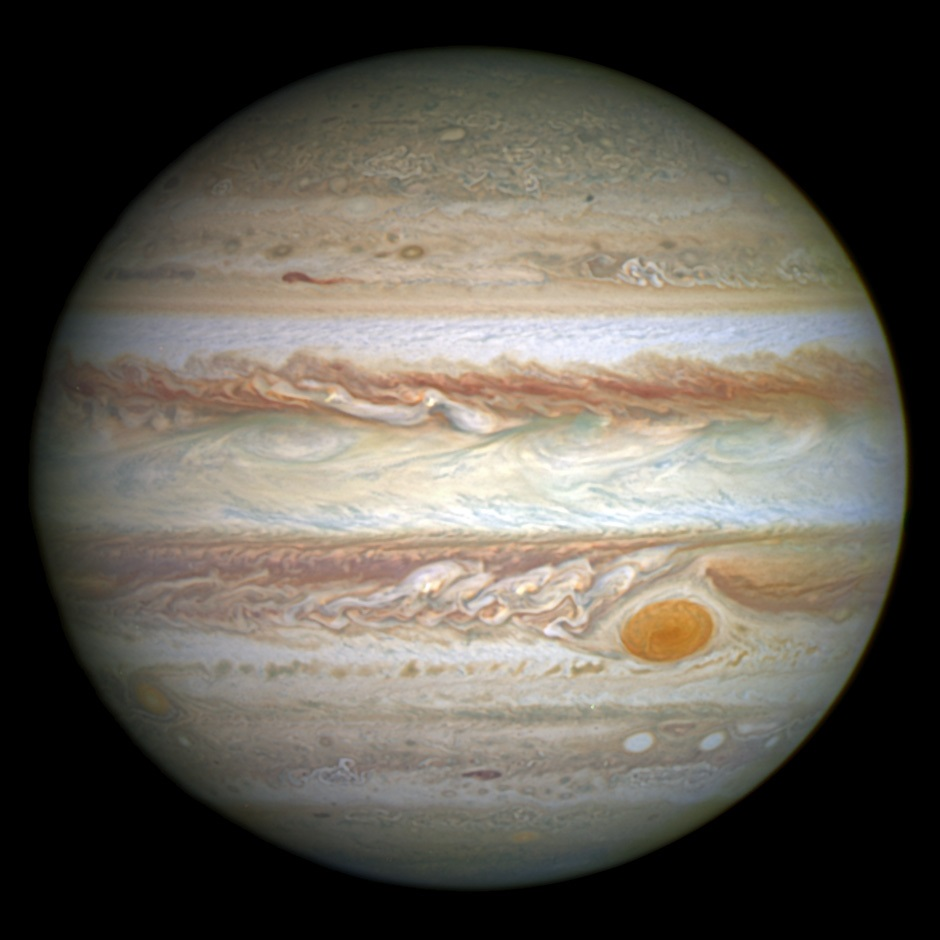
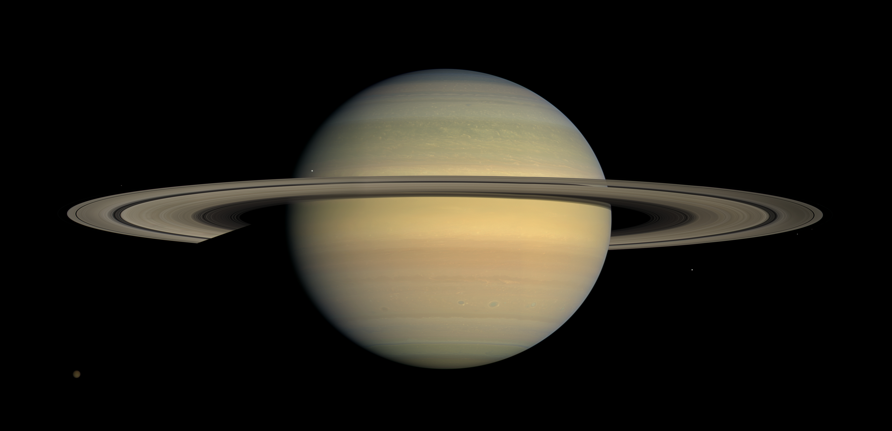
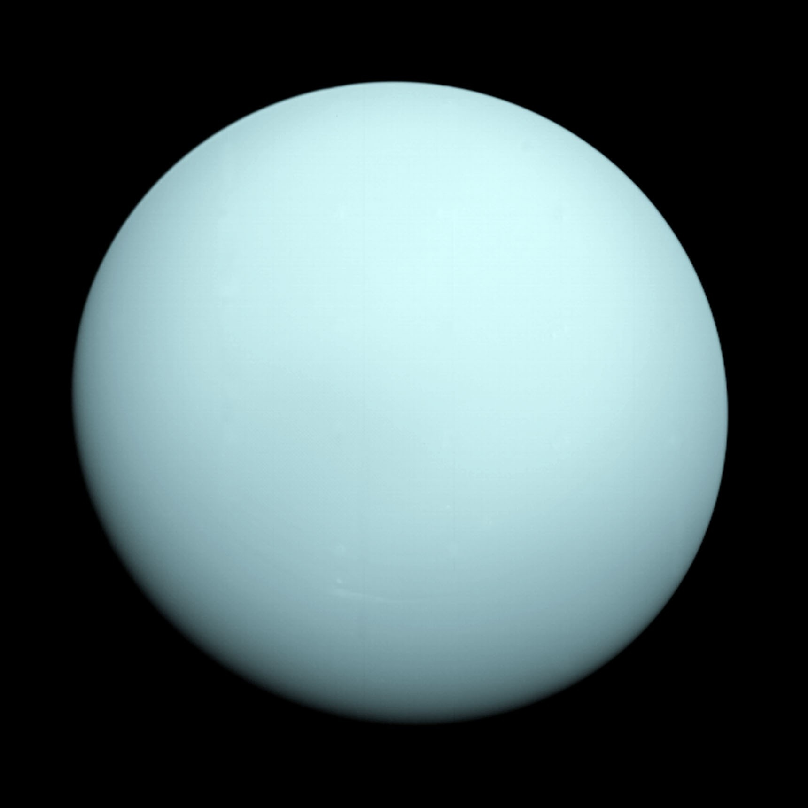
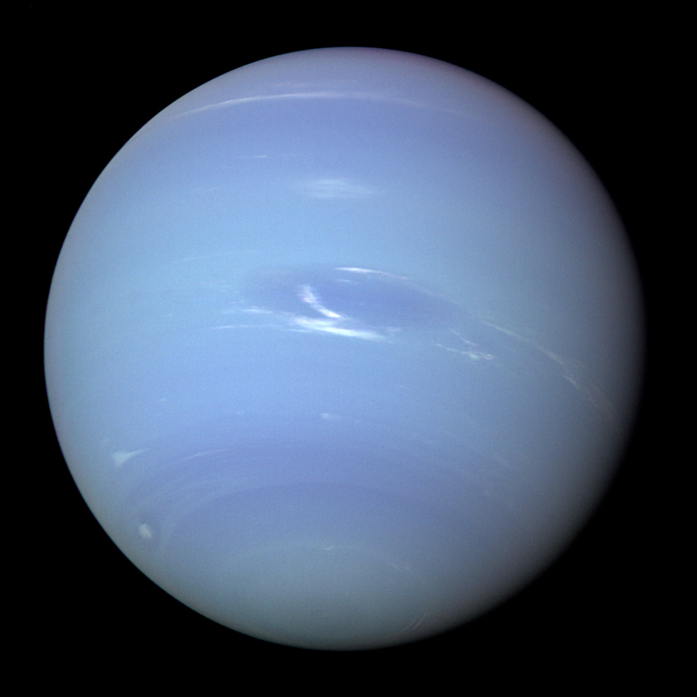

أ. محسن ردة الله الصاعدي
مدير المدرسة والمشرف العام | رعاية الإبداع العلمي والابتكار الطلابي
أ. أيمن البنا
المعلم المشرف | التوجيه العلمي والإشراف على أسبوع الفضاء
📡 رادار الطقس الفضائي الحي والعواصف الشمسية (Live Space Weather)
تحديث فوري من مراصد NOAA / NASAالعواصف المغناطيسية الأرضية
تقلبات طفيفة في شبكات الطاقة في أقصى الشمال وظهور الشفق القطبي عند خطوط العرض العليا.
عواصف الإشعاع الشمسي
مستويات الإشعاع ضمن الحدود الآمنة للرواد في محطة الفضاء الدولية وركاب الطائرات القطبية.
تعتيم موجات الراديو (HF)
ضعف مؤقت في إشارات التردد العالي (High-Frequency) في الجانب المواجه للشمس مع استقرار GPS.
🪐 النظام الشمسي – الكواكب الثمانية واستكشاف عوالمها
بيانات فلكية حقيقية لكتل، جاذبية، ومسافات الكواكب
عطارد (Mercury)
الكوكب الأقرب للشمسعالم صخري متطرف تتقلب حرارته بين 430°م نهاراً و -180°م ليلاً لعدم وجود غلاف جوي يحبس الحرارة.

الزهرة (Venus)
توأم الأرض الجهنميأكثر كواكب النظام الشمسي حرارة (465°م) بسبب ظاهرة الاحتباس الحراري الجامح تحت غلاف سميك من ثاني أكسيد الكربون.

الأرض (Earth)
واحة الحياة الزرقاءالكوكب الوحيد المعروف الذي تؤوي بيئته محيطات مائية وغلافاً جوياً غنياً بالأكسجين يحمي دروع الحياة.

المريخ (Mars)
الكوكب الأحمر المستكشفعالم صحراوي بارد بلون الصدأ، يحتوي على أضخم بركان في المجموعة الشمسية (جبل أوليمبوس) ووديان عملاقة.

المشتري (Jupiter)
عملاق الكواكب وحامي الأرضعملاق غازي هائل يتسع لأكثر من 1,300 كوكب مثل الأرض، وتدور فيه البقعة الحمراء العظيمة منذ قرون.

زحل (Saturn)
جوهرة الحلقات المهيبةيتألق بمنظومة حلقات بديعة متكونة من مليارات قطع الجليد والصخور، وكثافته الكلية أقل من كثافة الماء!

أورانوس (Uranus)
العملاق الجليدي المائليدور على جانبه بميلان يبلغ 98 درجة مما يجعل فصوله شديدة الغرابة، وغلافه غني بالميثان الذي يمنحه لونه الفيروزي.

نبتون (Neptune)
حارس الأطراف وعالم الرياح الفائقةأبعد الكواكب الرسمية عن الشمس، وتعصف في سمائه أعتى رياح في النظام الشمسي بسرعة تزيد عن 2,100 كم/ساعة.
⚖️ أداة مقارنة الكواكب التفاعلية
اختر أي كوكبين من القوائم لمقارنة الخصائص الفيزيائية ومخططات الجاذبية والكتلة والحجم مباشرة:
☀️ الشمس والقمر – نبض الحياة وجار الأرض الأقرب
الشمس ومحرك الاندماج النووي
مفاعل اندماج نووي عملاق يُحول 600 مليون طن من الهيدروجين إلى هيليوم كل ثانية، مولداً طاقة تمد كوكبنا بالدفء والنور.
- طبقات الشمس: القلب (15 مليون مئوية)، منطقة الإشعاع، منطقة الحمل، الغلاف الضوئي (الفوتوسفير)، وهالة الإكليل (الكورونا).
- الانبعاثات الكتلية الإكليلية (CME): مليارات الأطنان من البلازما الممغنطة المقذوفة في الفضاء مسببة الشفق القطبي والعواصف الجيومغناطيسية.
- البقع الشمسية: مناطق أكثر برودة على السطح تنشأ من تركيز خطوط المجال المغناطيسي القوية.
القمر وأطواره ومحطة أرتميس
جرمنا الأقرب (متوسط 384,400 كم) المقيد مدارياً بالأرض، يسبب ظاهرتي المد والجزر ويشكل منصة انطلاق البشرية القادمة نحو المريخ عبر برنامج أرتميس.
هيئة الاتصالات والفضاء والتقنية (CST)
الجهة المسؤولة عن تنظيم قطاع الفضاء في المملكة، وتمكين بيئة استثمارية محفزة للتقنيات والشبكات غير الأرضية، وتعزيز مكانة المملكة كمركز إقليمي رائد لاقتصاد الفضاء الجديد.
- البيئة التنظيمية التجريبية (Space SandBox): تمكين المبتكرين والشركات الناشئة من تجربة وتطوير الحلول والخدمات الفضائية.
- الشبكات غير الأرضية (NTN): تنظيم وتنسيق خدمات الاتصالات عبر الأقمار الصناعية وإنترنت النطاق العريض والمدارات المنخفضة (LEO).
- إدارة الموارد الطيفية والمدارية: حماية وإدارة الترددات الفضائية المخصصة للمملكة بالتنسيق مع الاتحاد الدولي للاتصالات (ITU).
- تحفيز ريادة الأعمال الفضائية: تسهيل تراخيص الاستثمار وجذب الشركات العالمية الرائدة لقطاع الفضاء السعودي.
وكالة الفضاء السعودية (SSA)
الجهة الوطنية التي ترسم السياسات والاستراتيجيات المستقبلية لصناعة الفضاء، وقيادة المهمات الاستكشافية، وتطوير الكفاءات والكوادر السعودية في علوم وتكنولوجيا الفضاء.
- برنامج المملكة لرواد الفضاء: إرسال الرواد السعوديين لمحطة الفضاء الدولية (ISS) وإجراء أبحاث طبية وعلمية تخدم البشرية.
- اتفاقيات أرتميس (Artemis Accords): توقيع الشراكة الاستراتيجية مع NASA للمشاركة في استكشاف القمر والمريخ.
- برنامج أجيال الفضاء (Ajyal): غرس الشغف العلمي بالفيزياء والفلك وهندسة الفضاء لدى طلاب وطالبات التعليم العام.
- توطين صناعة الأقمار الصناعية: دعم مراكز الأبحاث الوطنية لتصميم وبناء أنظمة التصوير والاستشعار عن بعد.
مهمة Ax-2 العلمية: ريانة برناوي وعلي القرني يحملان طموح الوطن إلى المدار
انطلقت المهمة في مايو 2023 برعاية وكالة الفضاء السعودية، حيث نفذ الرائدان 14 تجربة علمية بالتعاون مع مستشفى الملك فيصل التخصصي وجامعة الملك فهد للبترول والمعادن وكبرى الجامعات الوطنية.
👨🚀 رواد الفضاء العرب والعالميون – بصمة المجد بين النجوم
الأمير سلطان بن سلمان
أول رائد فضاء عربي ومسلمصاحب السمو الملكي، رائد الفضاء التاريخي الذي شارك في إطلاق القمر الصناعي العربي (عرب سات-1B) ونفذ تجارب طبية وفيزيائية رائدة وضعت العرب على خارطة رحلات الفضاء المأهولة.
ريانة برناوي
أول رائدة فضاء سعودية وعربيةأخصائية أبحاث الخلايا الجذعية، صعدت لمحطة الفضاء الدولية ونفذت تجارب خلوية دقيقة ومحاكاة الاستمطار الصناعي في بيئة الجاذبية الصغرى لصالح الأبحاث البشرية.
علي القرني
رائد فضاء سعودي وطيار مقاتلطيار مقاتل على طائرات F-15، حلق إلى محطة الفضاء الدولية وأجرى 14 تجربة علمية وتعليمية مع الطلاب السعوديين عبر اتصال مباشر من الفضاء لإلهام الأجيال.
د. سلطان النيادي
صاحب أطول مهمة فضائية عربيةرائد الفضاء الإماراتي، أول عربي يخوض مهمة سير في الفضاء المفتوح (Spacewalk) خارج محطة الفضاء الدولية لمدة 7 ساعات، ومكث 186 يوماً في المدار.
يوري جاجارين (Gagarin)
أول إنسان يعبر إلى الفضاءالرائد السوفيتي الذي كسر حاجز الأرض دار دورة كاملة حول الكوكب في 108 دقائق قائلاً كلمته الشهيرة: "انطلقنا! الأرض زرقاء كم هي رائعة الجمال!".
نيل أرمسترونج (Armstrong)
أول إنسان يطأ سطح القمرقائد مهمة أبولو الذي نزل على بحر الهدوء القمري قائلاً: "إنها خطوة صغيرة لإنسان، لكنها وثبة عملاقة للبشرية"، مسجلاً أول أثر بشري خارج الأرض.
جناح وكالة الفضاء الأمريكية (NASA) التفاعلي
بوابة حية مباشرة لأحدث برامج ناسا الاستكشافية، المحاكيات الفضائية ثلاثية الأبعاد، وتلسكوبات أعماق الكون

حقل المجرات السحيق الأول لتلسكوب جيمس ويب (SMACS 0723)
أعمق وأدق صورة ملونة بالأشعة تحت الحمراء للكون البعيد تم التقاطها في التاريخ. تُظهر عنقود المجرات SMACS 0723 كما كان قبل 4.6 مليار سنة، حيث تعمل كتلة العنقود كعدسة جاذبية طبيعية تُكبّر المجرات الأكثر بعداً التي تشكلت بعيد الانفجار العظيم.
مقارنة رصد سديم "أعمدة الخلق" بين تلسكوبي هابل وجيمس ويب
تلسكوب هابل يلتقط الضوء المرئي حيث يحجب الغبار الكوني النجوم الوليدة، بينما تلسكوب جيمس ويب (JWST) بأشعة الأشعة تحت الحمراء القريبة (NIRCam) يخترق سحب الغبار ليكشف آلاف النجوم حديثة الولادة داخل السديم.
تلسكوب هابل الفضائي (Hubble Space Telescope)
أُطلق عام 1990 بمرآة قطرها 2.4 متر في مدار أرضي منخفض (550 كم). أحدث ثورة في رصد الضوء المرئي وفوق البنفسجي، واكتشف تسارع تمدد الكون وتحديد عمره بنحو 13.8 مليار سنة.
تلسكوب جيمس ويب الفضائي (James Webb Space Telescope)
أُطلق في ديسمبر 2021 بمرآة عملاقة مطلية بالذهب قطرها 6.5 متر تتمركز في نقطة لاغرانج الثانية (L2) على بعد 1.5 مليون كم من الأرض. قدرته على الرصد الحراري تمكنه من رؤية أقدم مجرات تشكلت في فجر الكون.
طقس فوهة جيزيرو (Jezero Crater)
بيانات محطة MEDA المريخيّة المثبتة على مسبار Perseverance:
معرض صور حقيقية من سطح المريخ بعدسة مركبة Perseverance والمروحية Ingenuity
NASA Mars 2020 Mission
أبرز ابتكارات مسبار Perseverance العلميّة:
برنامج أرتميس (NASA Artemis: Moon to Mars)
البرنامج الأضخم لإعادة البشر إلى سطح القمر وبناء قاعدة مستدامة في القطب الجنوبي للقمر تمهيداً لرحلات الهبوط البشري الأولى على سطح المريخ.
بوابات وكالة ناسا الرسمية للطلاب والباحثين
روابط مباشرة لمواقع ومكتبات البيانات المفتوحة المعتمدة من وكالة الفضاء الأمريكية:
NASA Eyes 3D
محاكيات ثلاثية الأبعاد للنظام الشمسي والأرض والكويكباتNASA APOD
أرشيف صورة اليوم الفلكية اليومي منذ عام 1995NASA Science
بوابة أبحاث الفيزياء الفلكية واستكشاف الكواكب وعلوم الأرضNASA Media Library
مكتبة الصور والفيديوهات والتسجيلات الصوتية الفضائية المفتوحةNASA 3D Resources
نماذج ثلاثية الأبعاد للمركبات الفضائية والتلسكوبات للطباعة والتحميلArtemis Portal
التحديثات الحية لبرنامج أرتميس وصاروخ SLS وكبسولة أوريون🔬 مختبر المحاكاة والتجارب الفيزيائية التفاعلية (PhET Space Lab)
🎯 المهمة 1: إيقاف الجاذبية والقصور الذاتي
اختر نظام "الأرض والقمر"، واضغط على زر إيقاف الجاذبية (Gravity OFF) ولاحظ كيف ينطلق القمر في خط مستقيم مماس لمداره تطبيقاً لقانون نيوتن الأول.
🎯 المهمة 2: مضاعفة كتلة الشمس
قم بزيادة كتلة الشمس من شريط التحكم إلى الضعف (2×)، وراقب كيف يضيق المدار وتزداد سرعة دوران الأرض لتفادي الارتطام بالشمس.
🎯 المهمة 3: متجهات القوى والسرعة
فعّل خيارات (Gravity Force) و (Velocity) لعرض الأسهم المتجهة الملونة التي توضح اتجاه قوة الجذب المركزي وسرعة الانطلاق المداري.
🎯 المهمة 1: مناورة المقلاع الجاذبي (Slingshot)
اختر الإعداد المسبق (Slingshot) وشاهد كيف تكتسب المركبة الفضائية تسارعاً هائلاً عند مرورها بجانب كوكب ضخم دون استهلاك وقود.
🎯 المهمة 2: المدارات الإهليلجية لكيبلر
راقب شكل المدار البيضاوي ولاحظ كيف تزداد سرعة الكوكب في نقطة الحضيض (الأقرب للشمس) وتبطئ عند نقطة الأوج (الأبعد).
🎯 المهمة 3: نظام النجوم الثنائية (Binary Stars)
اختر سيناريو (Double Slingshot) أو (Binary Star) واستكشف رقصة الجاذبية الكونية المعقدة بين مركزين للكتلة في الفضاء العميق.
🎯 المهمة 1: إثبات قانون التربيع العكسي
استخدم المسطرة المرفقة لتقريب المسافة بين الكتلتين إلى النصف (0.5r)، ولاحظ كيف تتضاعف القوة بمقدار 4 أضعاف تماماً!
🎯 المهمة 2: القانون الثالث لنيوتن
اجعل إحدى الكرات كتلتها ضخمة (1000 كجم) والأخرى صغيرة (10 كجم)، ولاحظ أن قوة الجذب التي تشعر بها كل كرة متطابقة تماماً بالمقدار!
🎯 المهمة 3: قراءة قيمة ثابت الجاذبية G
استخرج الحسابات الرقمية وقارن القوة الناتجة بالمعادلة الكلاسيكية: F = G (m1 × m2) / r² وتأكد من الدقة الفيزيائية الفائقة للمحاكي.
🎯 المهمة 1: إيجاد زاوية الإطلاق المثالية
أطلق المقذوف بزوايا 30°، 45°، و 60° بنفس السرعة، وتحقق عملياً من أن زاوية 45° تحقق أقصى مدى أفقي ممكن في غياب الهواء.
🎯 المهمة 2: محاكاة الغلاف الجوي ومقاومة الهواء
فعّل خيار (Air Resistance) ولاحظ كيف ينحرف مسار الصاروخ ويهبط بشكل أسرع وأقصر مقارنة بالانطلاق في الفراغ الكوني.
🎯 المهمة 3: أداة قياس الهدف والنقاط
حرك أداة القياس المترية إلى نقطة هبوط المقذوف لقراءة زمن التحليق، أقصى ارتفاع رأسي، والسرعة النهائية عند الاصطدام.
اكتشف وزنك على باقي كواكب المجموعة الشمسية
الكتلة تظل ثابتة في كل مكان بالكون، لكن الوزن (قوة جذب الكوكب لكتلتك) يتغير حسب تسارع جاذبية كل جرم:
🏆 تحدي أسبوع الفضاء – اختبر معلوماتك واحصل على شهادتك الرقمية
ما هي السرعة المطلوبة للإفلات التام من جاذبية كوكب الأرض؟
شهادة رائد فضاء المستقبل الفخرية
يشهد فريق أسبوع الفضاء العالمي بأن الباحث المبدع:
قد اجتاز بنجاح واقتدار التحدي المعرفي الفضائي، وأظهر شغفاً علمياً استثنائياً في فهم أسرار الكون، والفيزياء المدارية، وتقنيات استكشاف الفضاء.
أ. محسن ردة الله الصاعدي
أ. أيمن البنا
محمد الحازمي & أحمد بيت المال & عبدالحميد طلعت